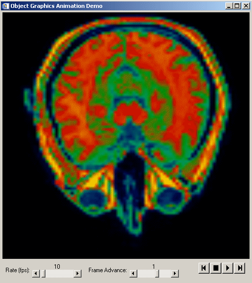

The IDLitWindow class serves as the base class for all windows within the iTools framework.
See IDLitWindow::Init .
Objects of this class inherit properties from the IDLgrWindow superclass. See IDLgrWindow Properties for descriptions of these properties.
This class has the following methods:
IDLitWindow::AddWindowEventObserver
IDLitWindow::RemoveWindowEventObserver
IDLitWindow::SetManipulatorManager
In addition, this class inherits the methods of its superclasses (if any).
You can incorporate animation into a widget application by using the CLASSNAME keyword to assign an IDLitWindow object to WIDGET_DRAW and using the properties and methods documented here.
The following widget application lets you start and stop an animation, and set the frame rate and frame increment. It is limited to this functionality only to highlight the essential features of animation. You could incorporate zooming, panning, or the addition of annotative objects (such as text, ROIs, or contours) in either the main-level model or in individual object models.
See
animation_doc.pro
in the
examples/doc/objects
subdirectory of the IDL installation directory for the complete widget animation example. Run the example procedure by entering
animation_doc
at the IDL command prompt or view the file in an IDL Editor window by entering
.EDIT animation_doc.pro
.
The following figure shows a simple widget animation interface.

|
6.0 |
Introduced |
|
6.2 |
Added OnTimer and SetTimerInterval methods |
|
6.3 |
Added OnEnter, OnExit, OnExpose, and OnResize methods |
|
6.4 |
Added OnWheel method |